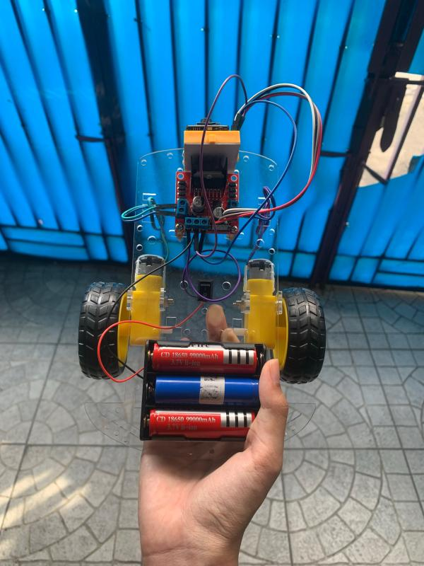
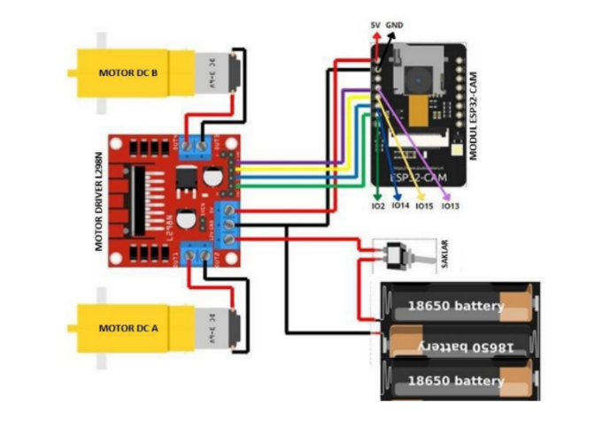
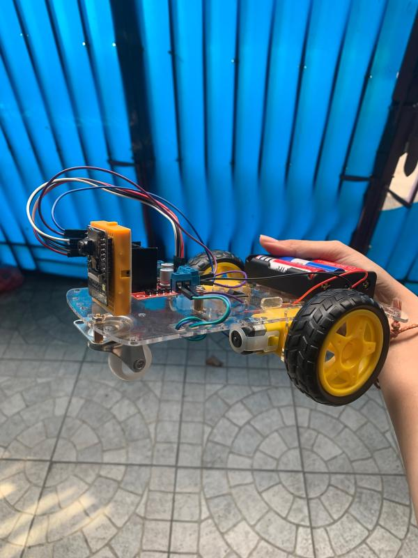
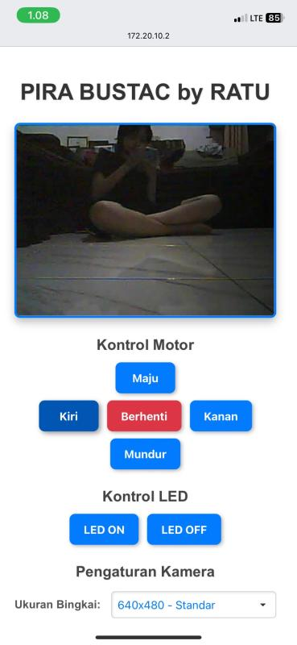

Hardware Assembly
Assembled the ESP32-CAM, L298N motor driver, DC motors, battery system, and supporting electronic connections into the mobile robot prototype.
Internet of Things · Hardware
An IoT-based monitoring robot developed using ESP32-CAM for real-time video monitoring and remote movement control in narrow areas.

ESP32-CAM based mobile monitoring robot.
01 — Overview
This project explored the use of IoT technology for monitoring narrow or difficult-to-reach areas using a compact mobile robot.
ESP32-CAM functions as the main controller and camera module, allowing users to monitor live video through a browser while remotely controlling the movement of the robot.
Through this project, I gained hands-on experience combining embedded programming, electronics, networking, cameras, motors, and hardware troubleshooting.
02 — My Role
Assembled the ESP32-CAM, L298N motor driver, DC motors, battery system, and supporting electronic connections into the mobile robot prototype.
Configured and programmed the ESP32-CAM through Arduino IDE to provide camera streaming and browser-based robot control.
Integrated the L298N motor driver to control two DC motors for forward, backward, left, and right movement.
Diagnosed issues involving connections, power delivery, motor response, camera streaming, and ESP32-CAM communication during development.
03 — How It Works
The ESP32-CAM captures video from the robot and provides the live stream through the local Wi-Fi network.
Users open the robot's local IP address through a browser to watch the camera stream and access movement, LED, and camera controls.
The L298N receives control signals and regulates the two DC motors responsible for moving the robot.
System Design
The wiring connects the ESP32-CAM with the L298N motor driver, two DC motors, switch, and battery supply.

Toolkit
04 — Outcome
Project Gallery
Hardware documentation and the browser-based control interface developed for the robot.

